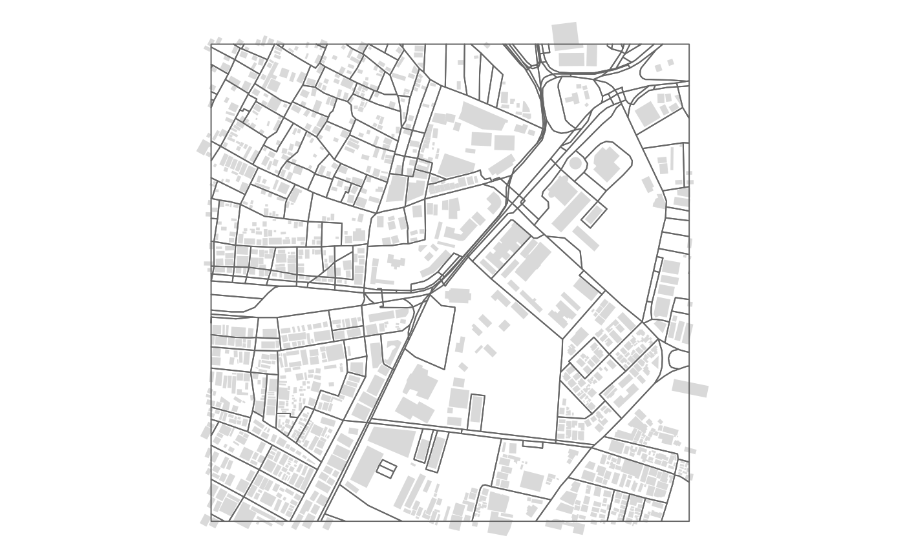
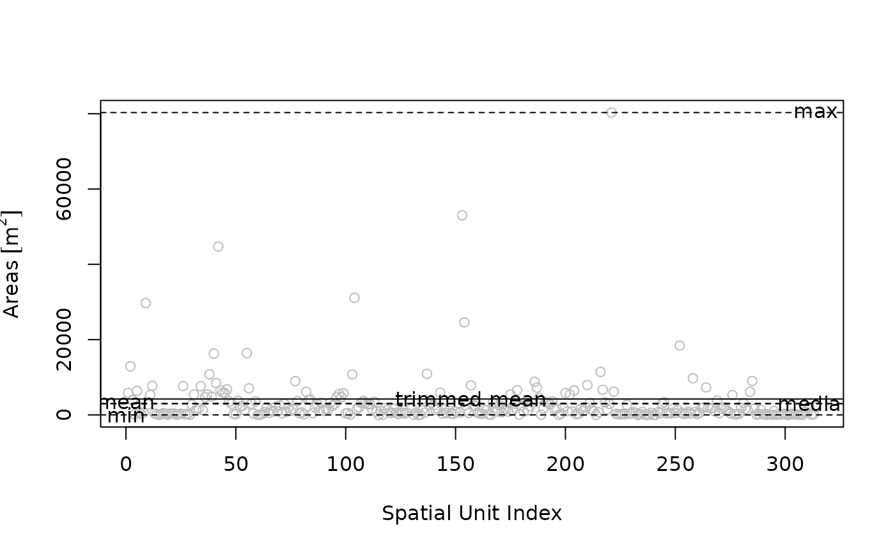
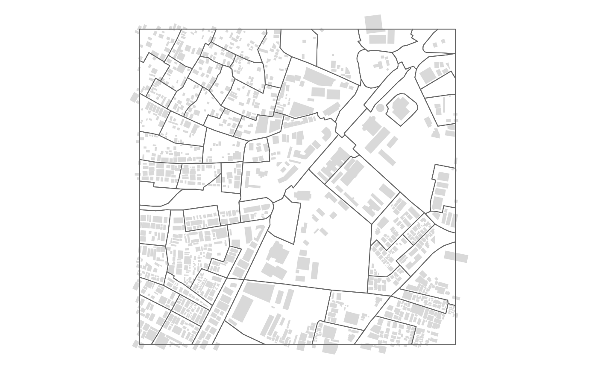
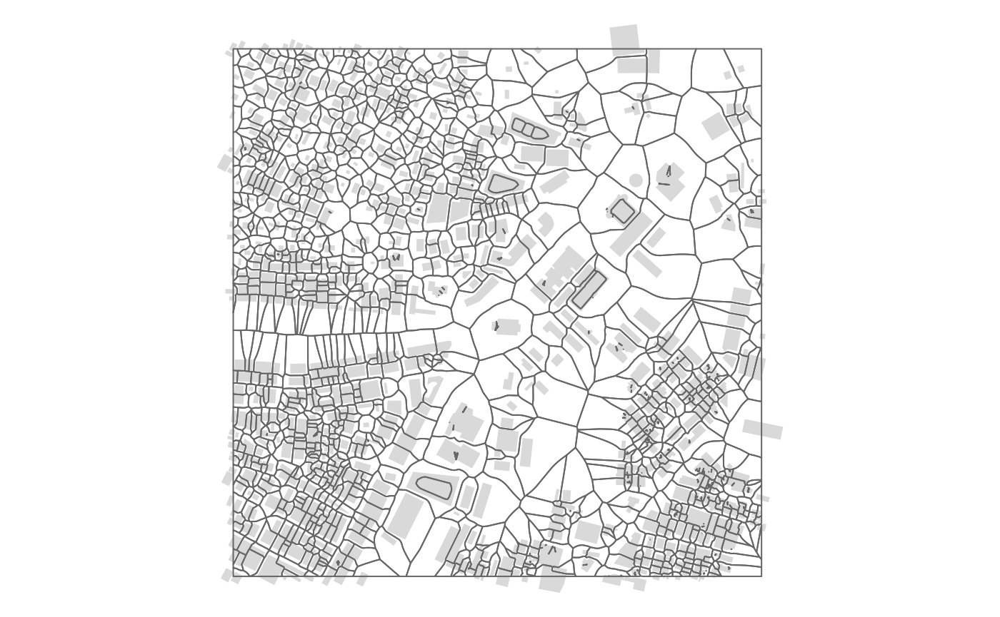

multi simplifies the process of creating morphological
spatial units like street blocks and morphological tessellation units
(MTs; Fleischmann et al., 2020). This vignette presents one workflow for
creating street blocks and MTs using data from OpenStreetMap (sourced
using the excellent osmdata package; Padgham et al., 2022)
with Bangalore, India as a case.
Street Blocks
The creation of streetblocks requires two input datasets: - a polygon representing the extents of the study area, - linestrings representing highways/ streets in the study area.
Typically, the study area extents are pre-defined and known to us (such as the administrative or municipal boundary within a particular city or region). For this vignette, we’ll define a location in the center of Bangalore and then draw a 500m buffer around it.
# Define the study area extents.
bangalore_boundary <- data.frame(lat = c(12.964045),
long = c(77.585611)) |>
sf::st_as_sf(coords = c("long", "lat"),
crs = 4326) |>
sf::st_transform(3857) |>
sf::st_buffer(500,
endCapStyle = "SQUARE") |>
sf::st_transform(4326) |>
sf::st_make_valid()
bangalore_boundary
#> Simple feature collection with 1 feature and 0 fields
#> Geometry type: POLYGON
#> Dimension: XY
#> Bounding box: xmin: 77.58112 ymin: 12.95967 xmax: 77.5901 ymax: 12.96842
#> Geodetic CRS: WGS 84
#> geometry
#> 1 POLYGON ((77.58112 12.96842...We can then use this buffer as the bounding box to download highways/ streets from OpenStreetMap.
# Download highways from OpenStreetMap
bangalore_highways <- osmdata::opq(bbox = sf::st_bbox(bangalore_boundary)) |>
osmdata::add_osm_feature("highway") |>
osmdata::osmdata_sf() |>
purrr::pluck("osm_lines") |>
dplyr::select(osm_id, highway, geometry) |>
sf::st_make_valid()
bangalore_highwaysNote: Both datasets are included in multi and can be
accessed using the data() function.
# Load data as included in the package.
data("bangalore_buildings") # Load for the map.
data("bangalore_highways")The code chunk below uses these datasets to draw street blocks. Aside
from setting merge_threshold = NULL, we use function
defaults.
# Draw street blocks.
bangalore_streetblocks <- multi::st_create_streetblocks(x = bangalore_highways,
boundary = bangalore_boundary,
merge_threshold = NULL,
verbose = TRUE)
#> Spherical geometry (s2) switched off
#> 314 street blocks created.
#> Warning in multi::st_create_streetblocks(x = bangalore_highways, boundary =
#> bangalore_boundary, : Small geometries (< 1 m^2) may be present. Use
#> st_merge_spatialunits() to aggregate them.
bangalore_streetblocks
#> Simple feature collection with 314 features and 0 fields
#> Geometry type: POLYGON
#> Dimension: XY
#> Bounding box: xmin: 77.58112 ymin: 12.95967 xmax: 77.5901 ymax: 12.96842
#> Geodetic CRS: WGS 84
#> First 10 features:
#> geometry
#> 1 POLYGON ((77.58983 12.96053...
#> 2 POLYGON ((77.58827 12.96102...
#> 3 POLYGON ((77.58761 12.96781...
#> 4 POLYGON ((77.58771 12.96783...
#> 5 POLYGON ((77.58771 12.96783...
#> 6 POLYGON ((77.5883 12.96777,...
#> 7 POLYGON ((77.58399 12.96386...
#> 8 POLYGON ((77.584 12.96395, ...
#> 9 POLYGON ((77.584 12.96395, ...
#> 10 POLYGON ((77.58406 12.96471...
tmap::tm_shape(bangalore_buildings) +
tmap::tm_fill(col = "#d9d9d9") +
tmap::tm_shape(bangalore_streetblocks) +
tmap::tm_borders() +
tmap::tm_layout(frame = FALSE)
Notice that the function warns us about the presence of small
geometries (< m^2). Such small geometries are often created when the
input data contains multiple linestrings in close proximity. Awkward
street intersections and small traffic islands also result in these
small geometries. To address this, we can either define a non-null
merge_threshold value (in m^2) while creating the street
blocks or use the st_merge_spatialunits function subsequently. We can
also use the st_survey_spatialunits() function to get an
overview of the current sizes.
multi::st_survey_spatialunits(bangalore_streetblocks,
trim = 0.3)
#> category description value
#> 1 Area Min 8.259066e-01 [m^2]
#> 2 Area Max 8.031008e+04 [m^2]
#> 3 Area Mean 3.006233e+03 [m^2]
#> 4 Area Median 3.006233e+03 [m^2]
#> 5 Area Trimmed Mean (0.3) 4.225273e+03 [m^2]The st_merge_spatialunits() function uses an iterative
merging process. Please refer to the Iterative Merging Vignette for more
details. Below, we use 4050 m^2 as the merge threshold and
max_shared_boundary as the merge type.
# Merge spatial units.
bangalore_streetblocks_merged <- multi::st_merge_spatialunits(x = bangalore_streetblocks,
merge_threshold = 4050,
merge_type = "max_shared_boundary")
#> Warning in multi::st_merge_spatialunits(x = bangalore_streetblocks,
#> merge_threshold = 4050, : The `sf` geometry column was renamed before merging.
#> 1: Polygon area is larger than merge threshold.
#> 2: Polygon area is larger than merge threshold.
#> 3: Polygons merged.
#> 4: Polygons merged.
#> 5: Polygons merged.
#> 6: Polygons merged.
#> 7: Polygons merged.
#> 8: Polygon area is larger than merge threshold.
#> 9: Polygon area is larger than merge threshold.
#> 10: Polygon area is larger than merge threshold.
#> 11: Polygons merged.
#> 12: Polygons merged.
#> 13: Polygons merged.
#> 14: Polygons merged.
#> 15: Polygons merged.
#> 16: Polygons merged.
#> 17: Polygon area is larger than merge threshold.
#> 18: Polygons merged.
#> 19: Polygons merged.
#> 20: Polygons merged.
#> 21: Polygon area is larger than merge threshold.
#> 22: Polygons merged.
#> 23: Polygon area is larger than merge threshold.
#> 24: Polygons merged.
#> 25: Polygon area is larger than merge threshold.
#> 26: Polygon area is larger than merge threshold.
#> 27: Polygon area is larger than merge threshold.
#> 28: Polygon area is larger than merge threshold.
#> 29: Polygon area is larger than merge threshold.
#> 30: Polygon area is larger than merge threshold.
#> 31: Polygon area is larger than merge threshold.
#> 32: Polygon area is larger than merge threshold.
#> 33: Polygon area is larger than merge threshold.
#> 34: Polygon area is larger than merge threshold.
#> 35: Polygons merged.
#> 36: Polygons merged.
#> 37: Polygons merged.
#> 38: Polygons merged.
#> 39: Polygons merged.
#> 40: Polygons merged.
#> 41: Polygons merged.
#> 42: Polygons merged.
#> 43: Polygons merged.
#> 44: Polygons merged.
#> 45: Polygons merged.
#> 46: Polygons merged.
#> 47: Polygons merged.
#> 48: Polygons merged.
#> 49: Polygons merged.
#> 50: Polygons merged.
#> 51: Polygons merged.
#> 52: Polygons merged.
#> 53: Polygons merged.
#> 54: Polygon area is larger than merge threshold.
#> 55: Polygon area is larger than merge threshold.
#> 56: Polygons merged.
#> 57: Polygons merged.
#> 58: Polygons merged.
#> 59: Polygons merged.
#> 60: Polygons merged.
#> 61: Polygons merged.
#> 62: Polygons merged.
#> 63: Polygon area is larger than merge threshold.
#> 64: Polygon area is larger than merge threshold.
#> 65: Polygon area is larger than merge threshold.
#> 66: Polygon area is larger than merge threshold.
#> 67: Polygons merged.
#> 68: Polygons merged.
#> 69: Polygon area is larger than merge threshold.
#> 70: Polygons merged.
#> 71: Polygons merged.
#> 72: Polygons merged.
#> 73: Polygons merged.
#> 74: Polygons merged.
#> 75: Polygons merged.
#> 76: Polygons merged.
#> 77: Polygons merged.
#> 78: Polygons merged.
#> 79: Polygons merged.
#> 80: Polygons merged.
#> 81: Polygons merged.
#> 82: Polygons merged.
#> 83: Polygons merged.
#> 84: Polygons merged.
#> 85: Polygons merged.
#> 86: Polygons merged.
#> 87: Polygons merged.
#> 88: Polygons merged.
#> 89: Polygons merged.
#> 90: Polygons merged.
#> 91: Polygons merged.
#> 92: Polygons merged.
#> 93: Polygon area is larger than merge threshold.
#> 94: Polygons merged.
#> 95: Polygon area is larger than merge threshold.
#> 96: Polygons merged.
#> 97: Polygons merged.
#> 98: Polygons merged.
#> 99: Polygons merged.
#> 100: Polygons merged.
#> 101: Polygons merged.
#> 102: Polygons merged.
#> 103: Polygons merged.
#> 104: Polygons merged.
#> 105: Polygons merged.
#> 106: Polygons merged.
#> 107: Polygons merged.
#> 108: Polygons merged.
#> 109: Polygons merged.
#> 110: Polygon area is larger than merge threshold.
#> 111: Polygon area is larger than merge threshold.
#> 112: Polygon area is larger than merge threshold.
#> 113: Polygons merged.
#> 114: Polygons merged.
#> 115: Polygons merged.
#> 116: Polygons merged.
#> 117: Polygons merged.
#> 118: Polygon area is larger than merge threshold.
#> 119: Polygons merged.
#> 120: Polygons merged.
#> 121: Polygons merged.
#> 122: Polygons merged.
#> 123: Polygon area is larger than merge threshold.
#> 124: Polygons merged.
#> 125: Polygons merged.
#> 126: Polygons merged.
#> 127: Polygon area is larger than merge threshold.
#> 128: Polygons merged.
#> 129: Polygons merged.
#> 130: Polygons merged.
#> 131: Polygons merged.
#> 132: Polygons merged.
#> 133: Polygons merged.
#> 134: Polygons merged.
#> 135: Polygons merged.
#> 136: Polygons merged.
#> 137: Polygons merged.
#> 138: Polygons merged.
#> 139: Polygons merged.
#> 140: Polygons merged.
#> 141: Polygons merged.
#> 142: Polygons merged.
#> 143: Polygons merged.
#> 144: Polygons merged.
#> 145: Polygons merged.
#> 146: Polygons merged.
#> 147: Polygons merged.
#> 148: Polygon area is larger than merge threshold.
#> 149: Polygons merged.
#> 150: Polygons merged.
#> 151: Polygon area is larger than merge threshold.
#> 152: Polygons merged.
#> 153: Polygons merged.
#> 154: Polygons merged.
#> 155: Polygons merged.
#> 156: Polygons merged.
#> 157: Polygon area is larger than merge threshold.
#> 158: Polygons merged.
#> 159: Polygons merged.
#> 160: Polygons merged.
#> 161: Polygons merged.
#> 162: Polygon area is larger than merge threshold.
#> 163: Polygons merged.
#> 164: Polygons merged.
#> 165: Polygons merged.
#> 166: Polygons merged.
#> 167: Polygons merged.
#> 168: Polygons merged.
#> 169: Polygons merged.
#> 170: Polygons merged.
#> 171: Polygons merged.
#> 172: Polygons merged.
#> 173: Polygons merged.
#> 174: Polygons merged.
#> 175: Polygons merged.
#> 176: Polygons merged.
#> 1: Polygon area is larger than merge threshold.
#> 2: Polygon area is larger than merge threshold.
#> 3: Polygon area is larger than merge threshold.
#> 4: Polygon area is larger than merge threshold.
#> 5: Polygons merged.
#> 6: Polygons merged.
#> 7: Polygons merged.
#> 8: Polygons merged.
#> 9: Polygon area is larger than merge threshold.
#> 10: Polygons merged.
#> 11: Polygon area is larger than merge threshold.
#> 12: Polygons merged.
#> 13: Polygon area is larger than merge threshold.
#> 14: Polygon area is larger than merge threshold.
#> 15: Polygon area is larger than merge threshold.
#> 16: Polygon area is larger than merge threshold.
#> 17: Polygon area is larger than merge threshold.
#> 18: Polygons merged.
#> 19: Polygon area is larger than merge threshold.
#> 20: Polygons merged.
#> 21: Polygons merged.
#> 22: Polygon area is larger than merge threshold.
#> 23: Polygon area is larger than merge threshold.
#> 24: Polygon area is larger than merge threshold.
#> 25: Polygon area is larger than merge threshold.
#> 26: Polygon area is larger than merge threshold.
#> 27: Polygons merged.
#> 28: Polygons merged.
#> 29: Polygon area is larger than merge threshold.
#> 30: Polygon area is larger than merge threshold.
#> 31: Polygon area is larger than merge threshold.
#> 32: Polygon area is larger than merge threshold.
#> 33: Polygon area is larger than merge threshold.
#> 34: Polygon area is larger than merge threshold.
#> 35: Polygons merged.
#> 36: Polygon area is larger than merge threshold.
#> 37: Polygons merged.
#> 38: Polygon area is larger than merge threshold.
#> 39: Polygon area is larger than merge threshold.
#> 40: Polygon area is larger than merge threshold.
#> 41: Polygon area is larger than merge threshold.
#> 42: Polygons merged.
#> 43: Polygon area is larger than merge threshold.
#> 44: Polygons merged.
#> 45: Polygons merged.
#> 46: Polygons merged.
#> 47: Polygon area is larger than merge threshold.
#> 48: Polygons merged.
#> 49: Polygons merged.
#> 50: Polygon area is larger than merge threshold.
#> 51: Polygons merged.
#> 52: Polygon area is larger than merge threshold.
#> 53: Polygon area is larger than merge threshold.
#> 54: Polygon area is larger than merge threshold.
#> 55: Polygon area is larger than merge threshold.
#> 56: Polygon area is larger than merge threshold.
#> 57: Polygons merged.
#> 58: Polygons merged.
#> 59: Polygon area is larger than merge threshold.
#> 60: Polygon area is larger than merge threshold.
#> 61: Polygons merged.
#> 62: Polygons merged.
#> 63: Polygon area is larger than merge threshold.
#> 64: Polygons merged.
#> 65: Polygons merged.
#> 66: Polygons merged.
#> 67: Polygon area is larger than merge threshold.
#> 68: Polygons merged.
#> 69: Polygons merged.
#> 70: Polygon area is larger than merge threshold.
#> 71: Polygon area is larger than merge threshold.
#> 72: Polygon area is larger than merge threshold.
#> 73: Polygon area is larger than merge threshold.
#> 74: Polygon area is larger than merge threshold.
#> 75: Polygons merged.
#> 76: Polygon area is larger than merge threshold.
#> 77: Polygons merged.
#> 78: Polygons merged.
#> 79: Polygons merged.
#> 80: Polygons merged.
#> 81: Polygon area is larger than merge threshold.
#> 82: Polygon area is larger than merge threshold.
#> 83: Polygons merged.
#> 84: Polygons merged.
#> 85: Polygons merged.
#> 86: Polygons merged.
#> 87: Polygons merged.
#> 88: Polygons merged.
#> 89: Polygons merged.
#> 90: Polygons merged.
#> 91: Polygon area is larger than merge threshold.
#> 92: Polygons merged.
#> 93: Polygons merged.
#> 94: Polygon area is larger than merge threshold.
#> 95: Polygons merged.
#> 96: Polygon area is larger than merge threshold.
#> 97: Polygons merged.
#> 98: Polygons merged.
#> 99: Polygons merged.
#> 100: Polygons merged.
#> 101: Polygons merged.
#> 102: Polygon area is larger than merge threshold.
#> 103: Polygons merged.
#> 104: Polygons merged.
#> 105: Polygon area is larger than merge threshold.
#> 106: Polygons merged.
#> 107: Polygons merged.
#> 108: Polygon area is larger than merge threshold.
#> 109: Polygons merged.
#> 110: Polygons merged.
#> 111: Polygons merged.
#> 112: Polygons merged.
#> 113: Polygons merged.
#> 114: Polygons merged.
#> 115: Polygons merged.
#> 1: Polygon area is larger than merge threshold.
#> 2: Polygon area is larger than merge threshold.
#> 3: Polygons merged.
#> 4: Polygon area is larger than merge threshold.
#> 5: Polygon area is larger than merge threshold.
#> 6: Polygon area is larger than merge threshold.
#> 7: Polygon area is larger than merge threshold.
#> 8: Polygon area is larger than merge threshold.
#> 9: Polygon area is larger than merge threshold.
#> 10: Polygon area is larger than merge threshold.
#> 11: Polygon area is larger than merge threshold.
#> 12: Polygon area is larger than merge threshold.
#> 13: Polygon area is larger than merge threshold.
#> 14: Polygons merged.
#> 15: Polygon area is larger than merge threshold.
#> 16: Polygon area is larger than merge threshold.
#> 17: Polygon area is larger than merge threshold.
#> 18: Polygon area is larger than merge threshold.
#> 19: Polygon area is larger than merge threshold.
#> 20: Polygon area is larger than merge threshold.
#> 21: Polygon area is larger than merge threshold.
#> 22: Polygon area is larger than merge threshold.
#> 23: Polygon area is larger than merge threshold.
#> 24: Polygon area is larger than merge threshold.
#> 25: Polygon area is larger than merge threshold.
#> 26: Polygons merged.
#> 27: Polygons merged.
#> 28: Polygon area is larger than merge threshold.
#> 29: Polygons merged.
#> 30: Polygons merged.
#> 31: Polygon area is larger than merge threshold.
#> 32: Polygons merged.
#> 33: Polygon area is larger than merge threshold.
#> 34: Polygon area is larger than merge threshold.
#> 35: Polygons merged.
#> 36: Polygon area is larger than merge threshold.
#> 37: Polygon area is larger than merge threshold.
#> 38: Polygon area is larger than merge threshold.
#> 39: Polygon area is larger than merge threshold.
#> 40: Polygons merged.
#> 41: Polygon area is larger than merge threshold.
#> 42: Polygon area is larger than merge threshold.
#> 43: Polygon area is larger than merge threshold.
#> 44: Polygon area is larger than merge threshold.
#> 45: Polygon area is larger than merge threshold.
#> 46: Polygon area is larger than merge threshold.
#> 47: Polygon area is larger than merge threshold.
#> 48: Polygon area is larger than merge threshold.
#> 49: Polygon area is larger than merge threshold.
#> 50: Polygons merged.
#> 51: Polygon area is larger than merge threshold.
#> 52: Polygon area is larger than merge threshold.
#> 53: Polygon area is larger than merge threshold.
#> 54: Polygon area is larger than merge threshold.
#> 55: Polygon area is larger than merge threshold.
#> 56: Polygon area is larger than merge threshold.
#> 57: Polygon area is larger than merge threshold.
#> 58: Polygons merged.
#> 59: Polygons merged.
#> 60: Polygon area is larger than merge threshold.
#> 61: Polygon area is larger than merge threshold.
#> 62: Polygon area is larger than merge threshold.
#> 63: Polygon area is larger than merge threshold.
#> 64: Polygon area is larger than merge threshold.
#> 65: Polygon area is larger than merge threshold.
#> 66: Polygons merged.
#> 67: Polygons merged.
#> 68: Polygon area is larger than merge threshold.
#> 69: Polygons merged.
#> 70: Polygons merged.
#> 71: Polygons merged.
#> 72: Polygons merged.
#> 73: Polygons merged.
#> 74: Polygon area is larger than merge threshold.
#> 75: Polygons merged.
#> 76: Polygons merged.
#> 77: Polygons merged.
#> 78: Polygons merged.
#> 79: Polygon area is larger than merge threshold.
#> 80: Polygons merged.
#> 81: Polygon area is larger than merge threshold.
#> 82: Polygons merged.
#> 83: Polygon area is larger than merge threshold.
#> 84: Polygons merged.
#> 85: Polygons merged.
#> 86: Polygons merged.
#> 1: Polygon area is larger than merge threshold.
#> 2: Polygon area is larger than merge threshold.
#> 3: Polygon area is larger than merge threshold.
#> 4: Polygon area is larger than merge threshold.
#> 5: Polygon area is larger than merge threshold.
#> 6: Polygon area is larger than merge threshold.
#> 7: Polygon area is larger than merge threshold.
#> 8: Polygon area is larger than merge threshold.
#> 9: Polygon area is larger than merge threshold.
#> 10: Polygon area is larger than merge threshold.
#> 11: Polygon area is larger than merge threshold.
#> 12: Polygon area is larger than merge threshold.
#> 13: Polygon area is larger than merge threshold.
#> 14: Polygon area is larger than merge threshold.
#> 15: Polygon area is larger than merge threshold.
#> 16: Polygon area is larger than merge threshold.
#> 17: Polygons merged.
#> 18: Polygon area is larger than merge threshold.
#> 19: Polygon area is larger than merge threshold.
#> 20: Polygons merged.
#> 21: Polygon area is larger than merge threshold.
#> 22: Polygon area is larger than merge threshold.
#> 23: Polygon area is larger than merge threshold.
#> 24: Polygon area is larger than merge threshold.
#> 25: Polygon area is larger than merge threshold.
#> 26: Polygon area is larger than merge threshold.
#> 27: Polygon area is larger than merge threshold.
#> 28: Polygon area is larger than merge threshold.
#> 29: Polygon area is larger than merge threshold.
#> 30: Polygon area is larger than merge threshold.
#> 31: Polygon area is larger than merge threshold.
#> 32: Polygon area is larger than merge threshold.
#> 33: Polygon area is larger than merge threshold.
#> 34: Polygon area is larger than merge threshold.
#> 35: Polygon area is larger than merge threshold.
#> 36: Polygon area is larger than merge threshold.
#> 37: Polygon area is larger than merge threshold.
#> 38: Polygon area is larger than merge threshold.
#> 39: Polygon area is larger than merge threshold.
#> 40: Polygon area is larger than merge threshold.
#> 41: Polygon area is larger than merge threshold.
#> 42: Polygon area is larger than merge threshold.
#> 43: Polygon area is larger than merge threshold.
#> 44: Polygon area is larger than merge threshold.
#> 45: Polygon area is larger than merge threshold.
#> 46: Polygon area is larger than merge threshold.
#> 47: Polygon area is larger than merge threshold.
#> 48: Polygon area is larger than merge threshold.
#> 49: Polygon area is larger than merge threshold.
#> 50: Polygon area is larger than merge threshold.
#> 51: Polygon area is larger than merge threshold.
#> 52: Polygon area is larger than merge threshold.
#> 53: Polygon area is larger than merge threshold.
#> 54: Polygon area is larger than merge threshold.
#> 55: Polygon area is larger than merge threshold.
#> 56: Polygon area is larger than merge threshold.
#> 57: Polygon area is larger than merge threshold.
#> 58: Polygon area is larger than merge threshold.
#> 59: Polygon area is larger than merge threshold.
#> 60: Polygon area is larger than merge threshold.
#> 61: Polygon area is larger than merge threshold.
#> 62: Polygon area is larger than merge threshold.
#> 63: Polygon area is larger than merge threshold.
#> 64: Polygon area is larger than merge threshold.
#> 65: Polygon area is larger than merge threshold.
#> 66: Polygons merged.
#> 67: Polygon area is larger than merge threshold.
#> 68: Polygons merged.
#> 69: Polygons merged.
#> 70: Polygon area is larger than merge threshold.
#> 71: Polygon area is larger than merge threshold.
#> 72: Polygons merged.
#> 73: Polygon area is larger than merge threshold.
#> 74: Polygons merged.
#> 75: Polygons merged.
#> 76: Polygon area is larger than merge threshold.
#> 77: Polygons merged.
#> 1: Polygon area is larger than merge threshold.
#> 2: Polygon area is larger than merge threshold.
#> 3: Polygon area is larger than merge threshold.
#> 4: Polygon area is larger than merge threshold.
#> 5: Polygon area is larger than merge threshold.
#> 6: Polygon area is larger than merge threshold.
#> 7: Polygon area is larger than merge threshold.
#> 8: Polygon area is larger than merge threshold.
#> 9: Polygon area is larger than merge threshold.
#> 10: Polygon area is larger than merge threshold.
#> 11: Polygon area is larger than merge threshold.
#> 12: Polygon area is larger than merge threshold.
#> 13: Polygon area is larger than merge threshold.
#> 14: Polygon area is larger than merge threshold.
#> 15: Polygon area is larger than merge threshold.
#> 16: Polygon area is larger than merge threshold.
#> 17: Polygon area is larger than merge threshold.
#> 18: Polygon area is larger than merge threshold.
#> 19: Polygon area is larger than merge threshold.
#> 20: Polygon area is larger than merge threshold.
#> 21: Polygon area is larger than merge threshold.
#> 22: Polygon area is larger than merge threshold.
#> 23: Polygon area is larger than merge threshold.
#> 24: Polygon area is larger than merge threshold.
#> 25: Polygon area is larger than merge threshold.
#> 26: Polygon area is larger than merge threshold.
#> 27: Polygon area is larger than merge threshold.
#> 28: Polygon area is larger than merge threshold.
#> 29: Polygon area is larger than merge threshold.
#> 30: Polygon area is larger than merge threshold.
#> 31: Polygon area is larger than merge threshold.
#> 32: Polygon area is larger than merge threshold.
#> 33: Polygon area is larger than merge threshold.
#> 34: Polygon area is larger than merge threshold.
#> 35: Polygon area is larger than merge threshold.
#> 36: Polygon area is larger than merge threshold.
#> 37: Polygon area is larger than merge threshold.
#> 38: Polygon area is larger than merge threshold.
#> 39: Polygon area is larger than merge threshold.
#> 40: Polygon area is larger than merge threshold.
#> 41: Polygon area is larger than merge threshold.
#> 42: Polygon area is larger than merge threshold.
#> 43: Polygon area is larger than merge threshold.
#> 44: Polygon area is larger than merge threshold.
#> 45: Polygon area is larger than merge threshold.
#> 46: Polygon area is larger than merge threshold.
#> 47: Polygon area is larger than merge threshold.
#> 48: Polygon area is larger than merge threshold.
#> 49: Polygon area is larger than merge threshold.
#> 50: Polygon area is larger than merge threshold.
#> 51: Polygon area is larger than merge threshold.
#> 52: Polygon area is larger than merge threshold.
#> 53: Polygon area is larger than merge threshold.
#> 54: Polygon area is larger than merge threshold.
#> 55: Polygon area is larger than merge threshold.
#> 56: Polygon area is larger than merge threshold.
#> 57: Polygon area is larger than merge threshold.
#> 58: Polygon area is larger than merge threshold.
#> 59: Polygon area is larger than merge threshold.
#> 60: Polygon area is larger than merge threshold.
#> 61: Polygon area is larger than merge threshold.
#> 62: Polygon area is larger than merge threshold.
#> 63: Polygon area is larger than merge threshold.
#> 64: Polygon area is larger than merge threshold.
#> 65: Polygon area is larger than merge threshold.
#> 66: Polygon area is larger than merge threshold.
#> 67: Polygon area is larger than merge threshold.
#> 68: Polygon area is larger than merge threshold.
#> 69: Polygon area is larger than merge threshold.
#> 70: Polygons merged.
#> 71: Polygon area is larger than merge threshold.
#> 72: Polygon area is larger than merge threshold.
#> 73: Polygons merged.
#> 74: Polygon area is larger than merge threshold.
#> 75: Polygons merged.
#> Merging completed.
bangalore_streetblocks_merged
#> Simple feature collection with 74 features and 1 field
#> Geometry type: POLYGON
#> Dimension: XY
#> Bounding box: xmin: 77.58112 ymin: 12.95967 xmax: 77.5901 ymax: 12.96842
#> Geodetic CRS: WGS 84
#> First 10 features:
#> geometry areas
#> 1 POLYGON ((77.5819 12.9617, ... 27977
#> 2 POLYGON ((77.5876 12.96115,... 7165
#> 3 POLYGON ((77.58768 12.96654... 5580
#> 4 POLYGON ((77.58523 12.96382... 44205
#> 5 POLYGON ((77.58318 12.95967... 5659
#> 6 POLYGON ((77.58181 12.96131... 9398
#> 7 POLYGON ((77.58738 12.96686... 18959
#> 8 POLYGON ((77.58158 12.96706... 6993
#> 9 POLYGON ((77.58152 12.96405... 8912
#> 10 POLYGON ((77.58293 12.96395... 8896
tmap::tm_shape(bangalore_buildings) +
tmap::tm_fill(col = "#d9d9d9") +
tmap::tm_shape(bangalore_streetblocks_merged) +
tmap::tm_borders() +
tmap::tm_layout(frame = FALSE)
The merging process results in 74 streetblocks against an initial value of 314.
Morphological Tessellation Units
The process of creating morphological tessellation units (MTs) is very similar to the process of drawing streetblocks. The only major difference is that we require data on building polygons rather than highway/ street linestrings.
This data can also be obtained from OpenStreetMap.
# Download buildings from OpenStreetMap.
bangalore_buildings <- osmdata::opq(bbox = sf::st_bbox(bangalore_boundary)) |>
osmdata::add_osm_feature("building") |>
osmdata::osmdata_sf() |>
purrr::pluck("osm_polygons") |>
dplyr::select(osm_id, geometry) |>
sf::st_make_valid()As before, this example data is included with the package. The code
chunk below uses these datasets to draw MTs. We use default values for
segment_length, shrink_extent,
merge_type, and contiguity. We do however
define a merge threshold of 100 m^2. Fair warning, this function
(currently) takes longer to execute.
(Please refer to Fleischmann et al., 2020 for details on
segment_length and shrink_extent.)
# Draw MTUs.
bangalore_mtus <- multi::st_create_tessellations(x = bangalore_buildings,
boundary = bangalore_boundary,
merge_threshold = 100,
verbose = FALSE)
#> Warning in st_cast.MULTIPOLYGON(X[[i]], ...): polygon from first part only
#> Warning in st_cast.MULTIPOLYGON(X[[i]], ...): polygon from first part only
#> Warning in st_cast.MULTIPOLYGON(X[[i]], ...): polygon from first part only
#> Warning in st_cast.MULTIPOLYGON(X[[i]], ...): polygon from first part only
#> Warning in st_cast.MULTIPOLYGON(X[[i]], ...): polygon from first part only
#> Warning in st_cast.MULTIPOLYGON(X[[i]], ...): polygon from first part only
#> Warning in st_cast.MULTIPOLYGON(X[[i]], ...): polygon from first part only
#> Warning in st_cast.MULTIPOLYGON(X[[i]], ...): polygon from first part only
#> Warning in st_cast.MULTIPOLYGON(X[[i]], ...): polygon from first part only
#> Warning in st_merge_spatialunits(x = tessellations, merge_threshold =
#> merge_threshold, : The `sf` geometry column was renamed before merging.
bangalore_mtus
#> Simple feature collection with 1108 features and 1 field
#> Geometry type: POLYGON
#> Dimension: XY
#> Bounding box: xmin: 8636291 ymin: 1455125 xmax: 8637291 ymax: 1456125
#> Projected CRS: WGS 84 / Pseudo-Mercator
#> First 10 features:
#> geometry areas
#> 1 POLYGON ((8636339 1455338, ... 241
#> 2 POLYGON ((8636301 1455245, ... 393
#> 3 POLYGON ((8636740 1455880, ... 309
#> 4 POLYGON ((8636412 1455758, ... 431
#> 5 POLYGON ((8636301 1456116, ... 332
#> 6 POLYGON ((8636426 1456113, ... 411
#> 7 POLYGON ((8636365 1455948, ... 313
#> 8 POLYGON ((8636456 1455698, ... 269
#> 9 POLYGON ((8636326 1455921, ... 341
#> 10 POLYGON ((8636392 1455678, ... 360
tmap::tm_shape(bangalore_buildings) +
tmap::tm_fill(col = "#d9d9d9") +
tmap::tm_shape(bangalore_mtus) +
tmap::tm_borders() +
tmap::tm_layout(frame = FALSE)
A similar but alternative implementation of a function to create MTs is available in the moter package.
References
Fleischmann, M., Feliciotti, A., Romice, O., & Porta, S. (2020). Morphological tessellation as a way of partitioning space: Improving consistency in urban morphology at the plot scale. Computers, Environment and Urban Systems, 80, 101441.
Padgham, M., Rudis, B., Lovelace, R., Salmon, M., Smith, A., Smith, J., Gilardi, A., Spinielli, E., North, A., Machyna, M., & code), M. K. (Author of included R. (2022). osmdata: Import “OpenStreetMap” Data as Simple Features or Spatial Objects (0.1.10) [Computer software]. https://CRAN.R-project.org/package=osmdata